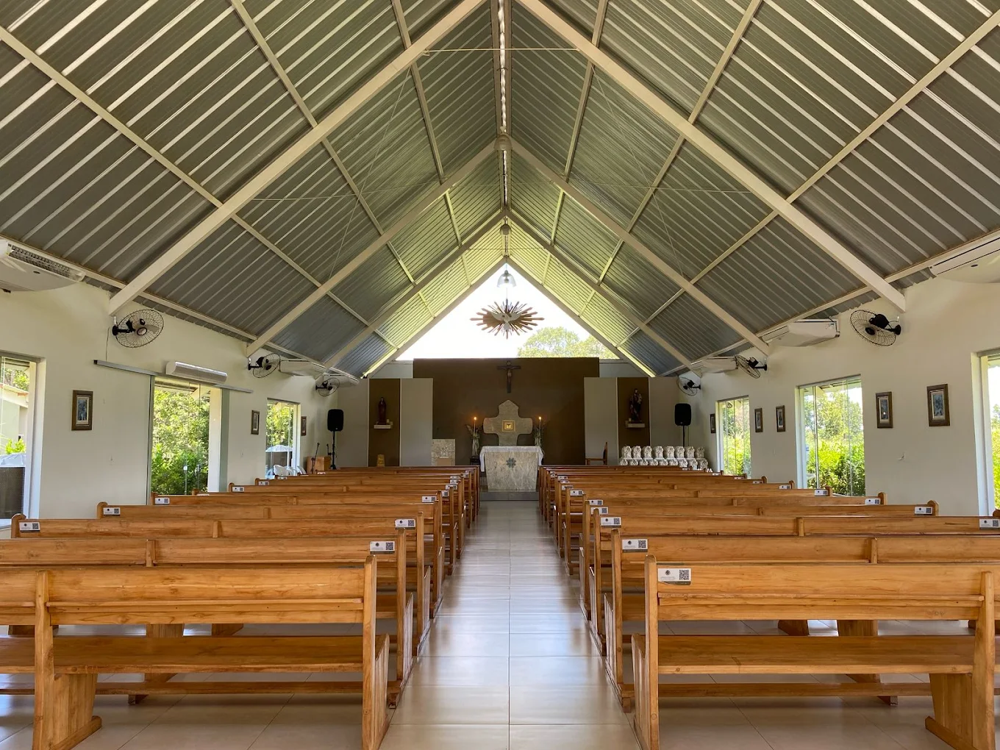
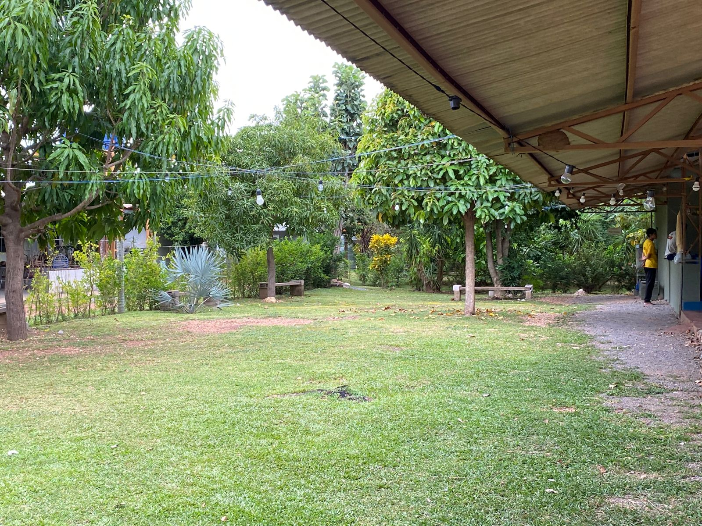

A Estrutura
Tudo o que o seu
Consultar Valores
Tudo o que o seu
retiro precisa.
Nossa chácara em Nossa Senhora do Livramento foi pensada para acolher com conforto e praticidade. Dispomos de refeitório industrial, capela para adoração e auditório para pregações.
Alojamentos com beliches
Cozinha industrial equipada
Ampla área verde para dinâmicas
Capela com
Santíssimo
Santíssimo

Catálogo
Conheça cada detalhe.



Dúvidas Frequentes
Qual a capacidade máxima de hospedagem?
A chácara possui alojamentos equipados com beliches que comportam até 150 pessoas confortavelmente instaladas.
A alimentação está inclusa no valor?
Disponibilizamos toda a estrutura da cozinha industrial (fogões, panelas grandes, freezers) e o refeitório. Os insumos e a preparação das refeições ficam por conta do grupo organizador.
É possível alugar apenas para passar o dia (Day Use)?
Sim! Nossa estrutura também atende encontros de um único dia (Day Use) sem pernoite. Consulte a nossa equipe para verificar os valores diferenciados.
Localização
A um passo do
A um passo do
seu retiro.
Chácara São José - Santana
Nossa Senhora do Livramento - MT
Estrada de fácil acesso para ônibus e vans.